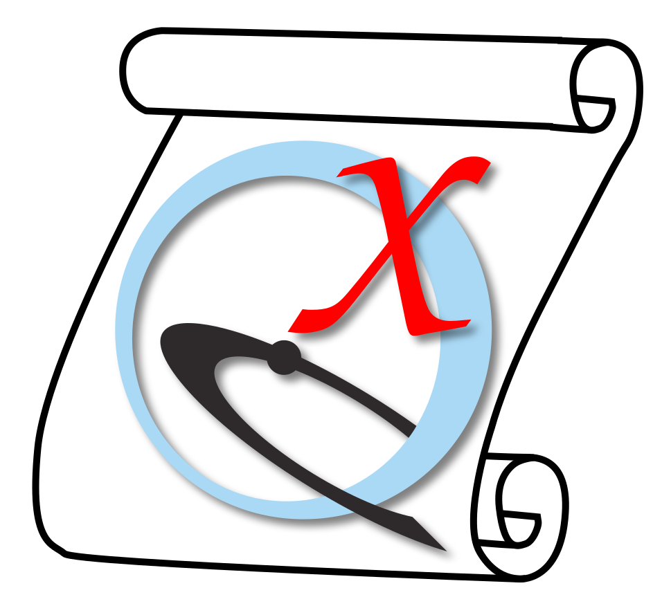
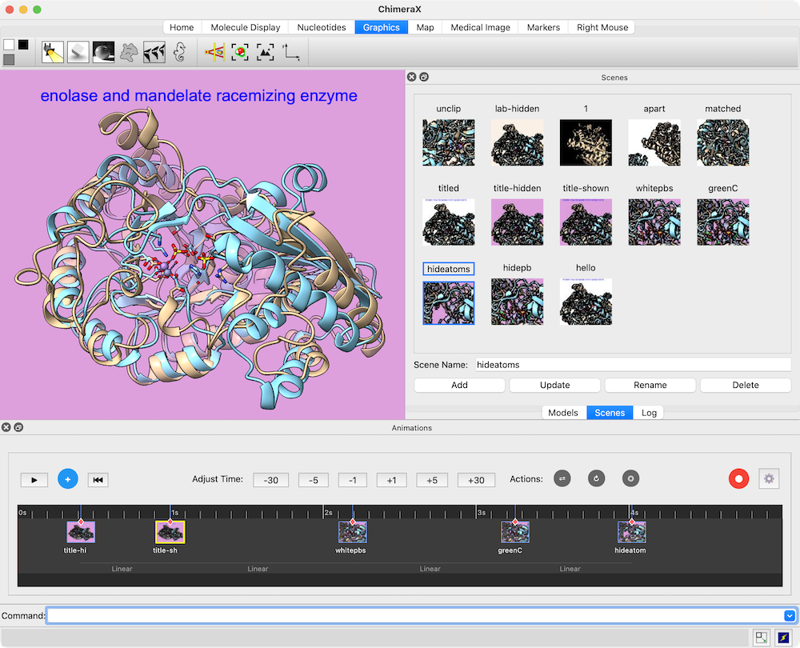

Animations is a timeline-based graphical interface for creating movies from a series of scenes and other actions. See also: making images, making movies
|
 |
Animations can be started from the Depiction section of the Tools menu and manipulated like other panels (more...).
Placing Scenes and Actions on the Timeline
Playback and Scrubber
Transitions between Scenes
Recording a Movie
Settings
An existing scene can be placed on the timeline by dragging and droppping a thumbnail from the Scenes tool. A new scene corresponding to the current ChimeraX contents can be created and added to the timeline by clicking the plus-sign icon (white on a blue circle). The scenes can be dragged horizontally to different positions on the timeline.
Adjust Time: Clicking the negative and positive numbers allows adjusting the length of the timeline by subtracting and adding seconds.
Actions: the three icons on gray circles represent (from left to right) represent rocking, rolling, and precession. Each type of action can be placed on the timeline any number of times by clicking and dragging the respective icon, and its start and stop times adjusted by dragging the left and right ends of the action bar horizontally on the timeline.
A scene or action can be removed from the timeline by clicking its representation on the timeline and pressing the delete key.
{kind=link}